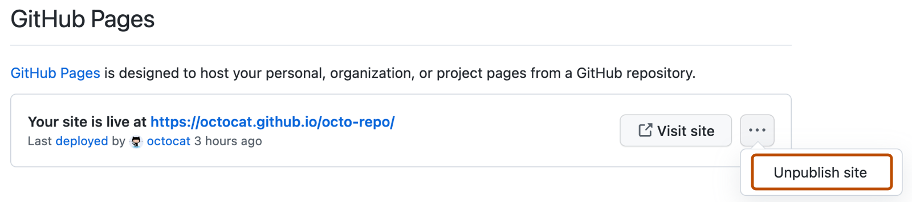

You can unpublish your GitHub Pages site so that your current deployment is removed and the site is no longer available. This is different from deleting the site.
When you unpublish your site, your current deployment is removed and the site will no longer be available. Any existing repository settings or content will not be affected.
Unpublishing a site does not permanently delete the site. For information on deleting a site, see Deleting a GitHub Pages site.

Unpublishing your GitHub Pages site removes your current deployment. To make your site available again, you can create a new deployment.
A successful workflow run in the repository for your site will create a new deployment. Trigger a workflow run to redeploy your site.